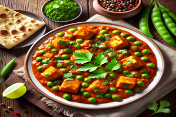

Matar Paneer Recipe

Ingredients
- 200g paneer, cubed
- 1/2 cup peas
- 1 tablespoon oil
- 1 onion, finely chopped
- 1 tomato, finely chopped
- 1/2 teaspoon ginger-garlic paste
- 1/2 teaspoon turmeric powder
- 1 teaspoon garam masala
- Salt to taste
- Coriander leaves for garnish
Steps to Prepare
- Heat oil in a pan, sauté onions and ginger-garlic paste until golden.
- Add tomatoes, turmeric, and garam masala. Cook until soft.
- Add peas and cook for 5-7 minutes.
- Stir in paneer cubes and cook until everything is well combined.
- Garnish with coriander leaves and serve hot.